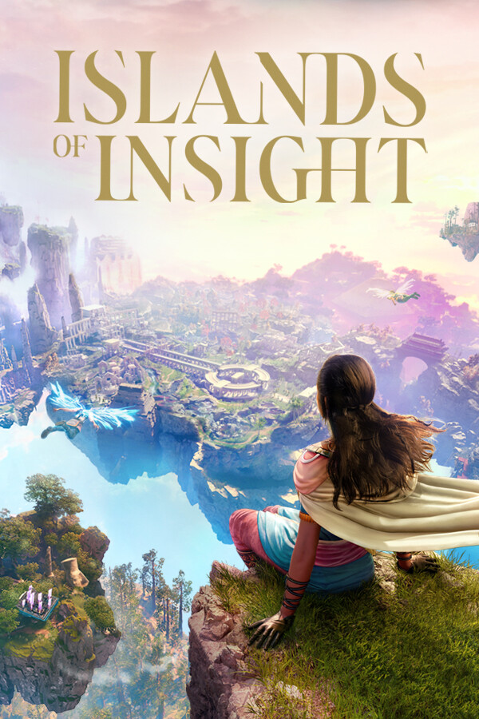

Islands of Insight
Islands of Insight
Details
|  | |
| Playtime | Not Played |
| Last Activity | Never |
| Added | 25.10.2024 23:53:19 |
| Modified | 25.10.2024 23:56:40 |
| Completion Status | Not Played |
| Library | Steam |
| Source | Steam |
| Platform | PC (Windows) |
| Release Date | 13.02.2024 |
| Community Score | 72 |
| Critic Score | 90 |
| User Score | |
| Genre | Adventure Indie Massively Multiplayer |
| Developer | Lunarch Studios |
| Publisher | Behaviour Interactive Inc. |
| Feature | Family Sharing MMO Multiplayer Single Player |
| Links | Steam Official Twitch |
| Tag | [HLTB] 30 to 40 hours 3D Dostosowywanie postaci Eksploracja Fantasy Filozoficzne Jednoosobowe Klimatyczne Logiczne Łamigłówki Łamigłówki platformowe MMO Nieliniowe Otwarty świat Perspektywa pierwszej osoby Perspektywa trzeciej osoby Przygodowe Przytulne Relaksujące Tajemnicze Wieloosobowe |
Description
Welcome to Islands of Insight: a sublime shared-world puzzle game set in a fantasy realm of ancient wonders and natural beauty. Brimming with mysterious puzzles to solve, secrets to uncover, and vibrant landscapes to explore, this peaceful world of floating islands is the perfect place to unwind. Embark on a puzzle adventure of your choice, all at your own pace.

Seek out and solve an unparalleled collection of over 10,000 puzzles divided across 24 puzzle types. Every corner of the world holds a new eureka moment for you to discover. From enigmas of perspective to logic problems, environmental challenges and more, the puzzles you’ll encounter vary in difficulty and have been crafted by some of the best minds in puzzle design to create an engaging experience for both newcomers and seasoned puzzle fans.


Freely explore the main island’s expansive open world where most of the puzzles and secrets are found. Wander the vibrant landscapes and architecture of its 5 distinct biomes or spread your wings to glide above them. Navigate the environment’s verticality and take your game to new heights. Unlock puzzle types and new areas in the campaign by completing 20+ Enclaves housing curated puzzle challenges. Go where you want. Solve what you want. The only path here is the one you make.


Play as a Seeker on a peaceful journey rich in exploration and puzzle-solving. Embark on the Path of Discovery and let your curiosity guide you through a breathtaking open world where the answer is always in sight.


Customize your character. Increase your puzzle masteries to level them up while earning sparks to unlock new abilities. Complete daily quests. Seamlessly interact with other players in our shared world to gain or offer a bit of guidance, or choose to figure things out entirely on your own. With puzzles that refresh over time, a new discovery awaits with every visit to the islands.

Age restrictions may apply to access this game.
Seek out and solve an unparalleled collection of over 10,000 puzzles divided across 24 puzzle types. Every corner of the world holds a new eureka moment for you to discover. From enigmas of perspective to logic problems, environmental challenges and more, the puzzles you’ll encounter vary in difficulty and have been crafted by some of the best minds in puzzle design to create an engaging experience for both newcomers and seasoned puzzle fans.
Freely explore the main island’s expansive open world where most of the puzzles and secrets are found. Wander the vibrant landscapes and architecture of its 5 distinct biomes or spread your wings to glide above them. Navigate the environment’s verticality and take your game to new heights. Unlock puzzle types and new areas in the campaign by completing 20+ Enclaves housing curated puzzle challenges. Go where you want. Solve what you want. The only path here is the one you make.
Play as a Seeker on a peaceful journey rich in exploration and puzzle-solving. Embark on the Path of Discovery and let your curiosity guide you through a breathtaking open world where the answer is always in sight.
Customize your character. Increase your puzzle masteries to level them up while earning sparks to unlock new abilities. Complete daily quests. Seamlessly interact with other players in our shared world to gain or offer a bit of guidance, or choose to figure things out entirely on your own. With puzzles that refresh over time, a new discovery awaits with every visit to the islands.
Age restrictions may apply to access this game.